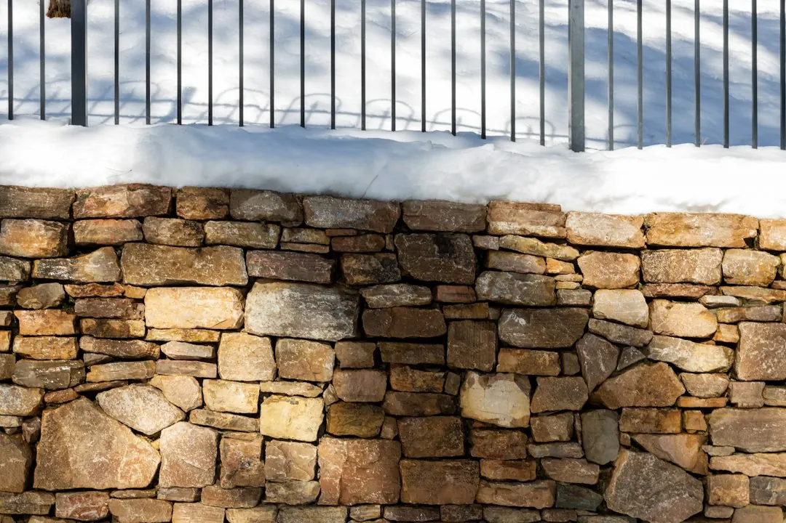

For a Perth retaining wall, check retained height, ground type, drainage, access and approval before comparing prices. The published local guide gives an indicative $250-$600 per square metre of wall face installed, depending on material, height and access, excluding GST, excavation, drainage and difficult access. In WA, a building permit is generally needed once a wall retains more than 0.5 m of ground, with extra checks for boundary, adjoining-land and related building work.
For homeowners comparing retaining walls perth options, the practical decision is soil, height, drainage, access, approvals and the written scope behind the quote.
Retaining Walls Perth Explained
Perth Retaining Walls frames the first decision around the block itself. On the coastal sand plain, walls often hold a level pad or stop sandy faces from ravelling. Near the Darling Scarp foothills, steeper slopes, shallow soil over rock and winter drainage can drive a different design conversation.
Before asking for prices, note the approximate wall length, the retained height at the highest point, access for machinery or materials, and whether the wall is new, replacement, garden terracing or part of another building project.
- Ask whether the retained height triggers a permit or engineering review.
- Ask how stormwater and subsoil drainage will be handled.
- Ask whether excavation, spoil removal and difficult access are included.
- Ask what wall face area the quote assumes.
Choose Material By Site Duty
Limestone is described as Perth's most common retaining wall material because it is locally quarried and suits the sandy Swan Coastal Plain. It is still a site decision, not a default. Post-and-panel concrete can suit taller or longer runs, while timber sleeper can suit low garden terracing.
Besser block, rock and boulder walls may fit where the design, appearance and ground conditions support them. For a second owner checklist, this Perth retaining wall planning guide gives a companion view of early project decisions.
For concrete systems, ask whether the quote is for simple supply and installation or an engineered retaining wall. Precast concrete retaining walls and panel and post retaining walls should have footing, post spacing, drainage and retained height considered together.
Settle Approval Questions Early
The published guide says a WA retaining wall generally needs a building permit once it retains more than 0.5 m of ground. It also says a wall of any height can still need a permit if it is tied to other building work, affects or protects adjoining land, or sits on a boundary wall or substantial dividing fence.
Ask which local government requirements apply, whether AS 4678 design is expected, and whether a Certificate of Design Compliance, known as BA3, is part of the approval path. Keep photos, a rough site sketch, retained heights, boundary notes and any council response in one project file so contractors are pricing the same facts.
Read The Quote For Inclusions
The guide gives an indicative range of $250-$600 per square metre of wall face installed, depending on material, height and access. It also says those figures exclude GST, excavation, drainage and difficult access. A low square metre figure is hard to compare unless the inclusions match.
Ask the contractor to separate visible wall supply and installation from site preparation. The written scope should state whether excavation, drainage aggregate, subsoil pipe, disposal, engineering, permit documents and reinstatement are included. For repairs, ask whether the existing wall is being removed, rebuilt, reinforced or patched, because each scope prices a different job.
If the quote is fixed price, check what can still trigger a variation, such as unexpected ground conditions, access limits or council requirements.
Who This Applies To
This guide is most useful for Perth homeowners planning a new wall, replacing an old wall, levelling a sandy block, terracing a garden, or comparing limestone, timber sleeper, besser block, rock, boulder, modular and panel-and-post options. It also applies where a wall may affect adjoining land, a boundary, a driveway, a building pad or related building work.
It is less useful for anyone seeking a firm price without site details. Retaining wall builders usually need height, length, access, material preference and drainage context before a quote can be compared properly.
Questions Before Approval
Before approving work, ask for the wall type, retained height, face area, drainage method, approvals allowed for and excluded items in writing. Ask who confirms local government requirements, especially near the 0.5 m retained-height threshold or where boundary and adjoining-land issues may apply.
The final check is practical: the quote should tell you what will be built, what problem it solves, what approval path has been considered and what sits outside the price. If those points are unclear, ask for the quote to be rewritten before materials are ordered.
- Measure retained height. Note the highest point of ground the wall will retain, because the WA permit discussion turns on retained height.
- Record access and drainage. Photograph machinery access, existing water paths and the area behind the proposed wall before asking for a quote.
- Compare inclusions. Check whether GST, excavation, drainage, difficult access, engineering and permit documents are included or excluded.
- Confirm approvals. Ask the relevant local government whether the wall needs a permit before work starts.
| Option | Where it may fit | Key quote question |
|---|---|---|
| Limestone | Common on sandy Swan Coastal Plain sites and locally quarried | Are drainage, excavation and access included? |
| Post-and-panel concrete | Taller or longer runs where a system approach is needed | Is engineering or permit documentation required? |
| Timber sleeper | Low garden terracing noted by the published guide | What height and lifespan assumptions are in the scope? |
| Besser block, rock or boulder | Where design, appearance and ground conditions suit | What footing, drainage and retained-height assumptions apply? |
Common questions
How much should I budget for a Perth retaining wall? The published local guide gives an indicative range of $250-$600 per square metre of wall face installed. It says that range depends on material, height and access, and excludes GST, excavation, drainage and difficult access.
When does a WA retaining wall need a permit? The guide says a building permit is generally needed once a wall retains more than 0.5 m of ground. It also says a wall of any height can still need a permit when tied to other building work, adjoining land, a boundary wall or a substantial dividing fence.
Is limestone always the best material in Perth? No. Limestone is described as the most common local material and well suited to sandy Swan Coastal Plain conditions, but post-and-panel concrete, timber sleeper, besser block, rock and boulder walls can suit different heights, budgets and site conditions.
What should I send before asking for a quote? Send the suburb or postcode, wall length, approximate retained height, photos, access notes, preferred material and any drainage or boundary concerns. Those details help a contractor price the actual project rather than a generic wall.
This guide covers Perth retaining wall materials, permit checks, quote inclusions, drainage questions and owner preparation before approving work.